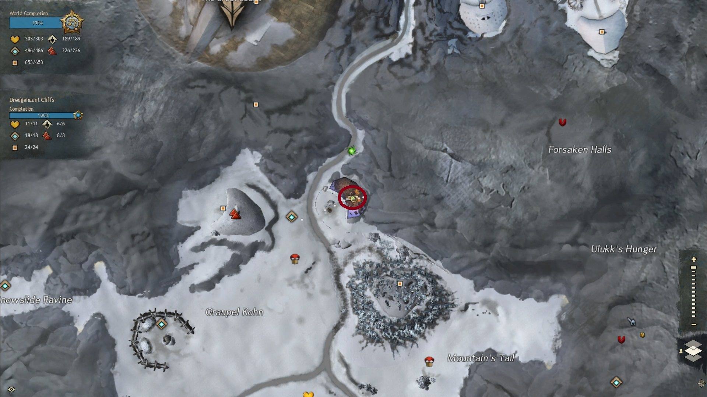

Poradnik | Kolekcje Nowych Broni
Konkurs Design-a-Weapon 2017

Zwycięzkie bronie z konkursu Design-a-Weapon 2017
7 Sierpnia 2018 ArenaNet wprowadziła trzy bronie które wygrały konkurs Design-a-Weapon 2017. Są to Favor of the Colossus (Torch), Eclipse (Greatsword) i Scion’s Claw (Sword). Wszystkie trzy bronie można odblokować w grze poprzez zrobienie trzech prostych kolekcji.
Odblokowywanie Kolekcji
Udaj się do Lion’s Arch, od razu po zalogowaniu dostaniesz maila który opisuje cztery przedmioty do zebrania. Następnie musisz połączyć te cztery przedmioty przy użyciu mystic forge’a:
- 2x Lesser Vision Crystal (2x Bloodstone Brick, 2x Dragonite Ingot, 2x Empyreal Star, 1x Augur’s Stone)
- 3x Vials of Blood
- 6x Sapphire Orbs
- 15x Glob of Ectoplasm
Po złączeniu tych przedmiotów w mystic forge’u dostaniesz Ectoplasm-Infused Vision Crystal, kliknij na niego dwa razy żeby odblokować trzy kolekcje.
Legend Builder
Do skompletowania tej kolekcji musisz się udać na Dredgehaunt Cliffs, tam spotkasz ducha o imieniu Bakkin który prosi cię o pomoc w opisaniu jego przygód i skompletowaniu Favor of the Colossus (Torch).
Warming Up
Udaj się na Graupel Waypoint [&BGICAAA=] wejdź do domu naprzeciwko waypointa, następnie porozmawiaj z Bakkin’em.
Transformations
Udaj się na Travelen's Waypoint [&BGQCAAA=] i skieruj się w stronę Leopard's Snarl Shrine, Bakkin stoi obok totemów.
Start to Stop
Udaj się na Grey Road Waypoint [&BFoCAAA=] i skieruj się do jaskini na lewo od waypointa, Bakkin ukrywa się w jaskini poniżej.
Larger than Legend
Udaj się na Dociu Waypoint [&BFgCAAA=] i skieruj się w stronę Hero Pointa, Bakkin stoi obok.
A Breath of Life
Udaj się na Tribulation Waypoint [&BFYCAAA=] i skieruj się w stronę Tomb of Morlog, następnie wespnij się na samą górę Jumping Puzzla (drewniana struktura) gdzie znajdziesz Bakkin’a.
Imbued Oiled Orichalcum Torch Head
Musisz zakupić lub wypordukować Oiled Orchalcum Torch Head, następnie przenieś się na Graupel Waypoint [&BGICAAA=] wejdź do domu naprzeciwko waypointa, porozmawiaj z Bakkin’em żeby skończyć kolekcję i otrzymać Favor of the Colossus (Torch).
Guide to Greater Understanding
A Shade’s Blindspot
Udaj się na Kestrel Waypoint [&BD0EAAA=] i przejdź się na cmentarz, następnie porozmawiaj z Xeniph.

Memory Lane
Udaj się na Helliot Mine Waypoint [&BEsBAAA=] i skieruj się do Abandon Mine Jumping Puzzle (opuszczona kopalnia), Xeniph stoi na kamiennej kolumnie niedaleko skrzynki na końcu puzzla.
Blame Game
Udaj się na Thunderbreak Waypoint [&BD4EAAA=] i skieruj się w stronę napisu Thunderbreak Hills, Xeniph stoi pod drzewem.
A Balanced View
Udaj się na Fangfury Watch Waypoint [&BEwBAAA=] i dostań się do jaskini Highden Caves, Xeniph stoi obok dużego kamienia pod wodospadem .
Ghost Growth
Udaj się na Ogre Road Waypoint [&BE8BAAA=] i skieruj się na południe, Xeniph stoi z tyłu obozu ogrów.

Imbued Oiled Orichalcum Greatsword Blade
Musisz zakupić lub wyprodukować Oiled Orichalcum Greatsword Blade, następnie przenieś się na Kestrel Waypoint [&BD0EAAA=] i przejdź się na cmentarz, porozmawiaj z Xeniph żeby skończyć kolekcję i otrzymać Eclipse (Greatsword).
Healing Heir
Do skompletowania tej kolekcji musisz się udać na Dry Toptam pomożesz duchowi o imieniu Nayeli w znalezieniu wszystkich części jej duszy. Za pomoc Neyeli podaruje ci Scion’s Claw (Sword).
Scattered Self
Udaj się na Dry Top Entry Waypoint [&BIAHAAA=] i skieruj się do Visty nad Crash Site 1, następnie porozmawiaj z Neyeli.
Updraft of a Dream
Udaj się na Prosperity Waypoint [&BHoHAAA=] i skieruj się w stronę Sparring Rock, Nayeli stoi klifie obok fioletowego kamiena.
Duty’s Shards
Udaj się na Vine Bridge Waypoint [&BIYHAAA=] i dostań się do Cavern of Shining Lights, Nayeli stoi na prawym końcu jaskini niedaleko hero pointa.

Low Spirit
Udaj się na Vine Bridge Waypoint [&BIYHAAA=] i skieruj się na północ w stronę hero pointa, Nayeli stoi zaraz obok hero pointa przy wodospadzie.
A Soul Resewn
Udaj się na Repair Station Waypoint [&BJcHAAA=] i skieruj się na południe w stronę Visty, Nayeli stoi na wysokiej krawędzi nad Vistą.
Imbued Oiled Orichalcum Sword Blade
Musisz zakupić lub wyprodukować Oiled Orichalcum Sword Blade, następnie przenieś się na Dry Top Entry Waypoint [&BIAHAAA=] i i skieruj się do Visty nad Crash Site 1, porozmawiaj z Nayeli żeby skończyć kolekcję i otrzymać Scion’s Claw (Sword).